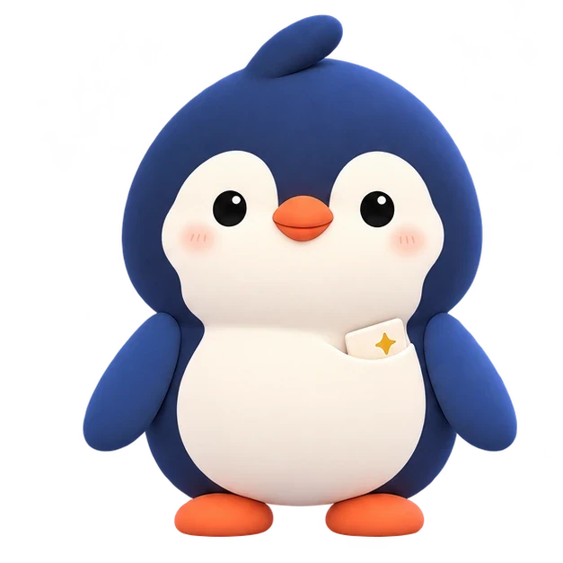
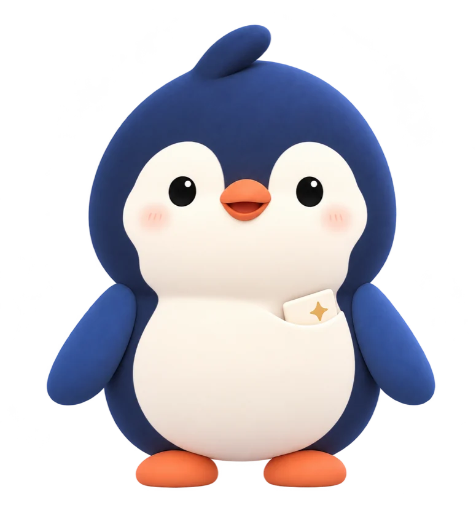

按需原型 / 封存卡
给明天留一句。
如果你主动想留一句话，可以编辑后确认保存，等明天想看时再打开。

NiNi 在这里陪着你。
NiNi 在这里
选一个更接近此刻心情的片段。没有标准答案，也可以随时停下来。
初到这里
新的节奏、新的关系，需要一点时间熟悉。今晚，不用急着变得游刃有余。

NiNi 轻声说
慢一点也没关系，我陪你适应。
情境演示 · 文字为预设内容
02 / 陪伴体验
每一步都由你决定。
想开口、想安静、想停下，都可以。
01 / 03
白天还在心里的事，可以轻轻说出来。
今天开会被否定了。
那句话还在心里。你可以只说到这里。
跟着自己的节奏
什么时候结束，由你决定。
情境演示 · 使用预设台词
03 / 认识 NiNi
有时想要一点温柔，有时只想把话说完。选一种 NiNi 的回应方式，随时可以切换。
「那句话到了晚上还在心里。你可以只说到这里。」
04 / 关于屿
屿 YUNI 是面向成年人的 AI 睡前情绪陪伴产品。我们把体验做得短一点，让每一次开始和结束都由你掌握。
如果你主动想留一句话，可以编辑后确认保存，等明天想看时再打开。
项目已有网页原型和短对话演示。本站用预设情境展示新版陪伴流程和 NiNi 回应风格。封存卡是按需原型，完整流程仍在验证中。
本页演示直接使用示例台词，无需输入个人信息。产品的睡前流程也可以从「直接放松」开始。
准备休息时，如果白天的事还在脑子里打转，可以给自己留一小段时间。屿 YUNI 提供日常陪伴与短放松。困扰持续或影响日常生活时，建议联系信任的人或专业人士。